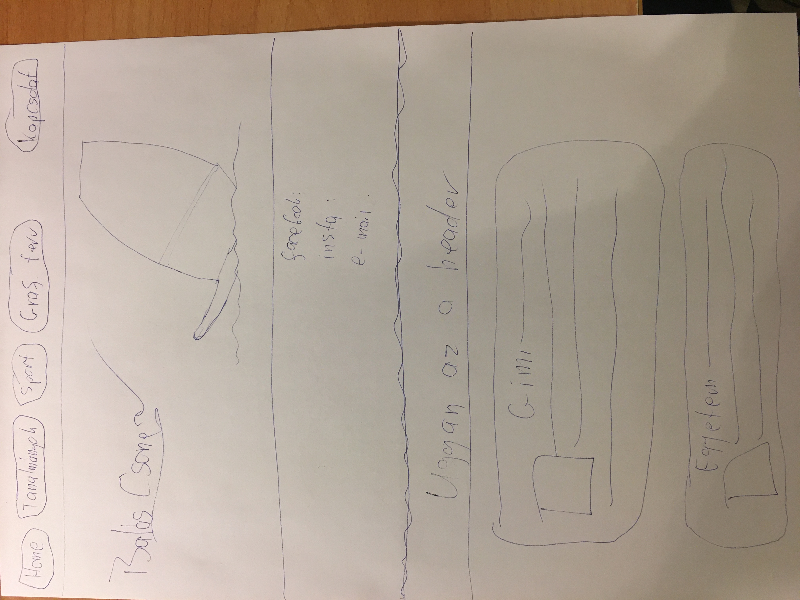
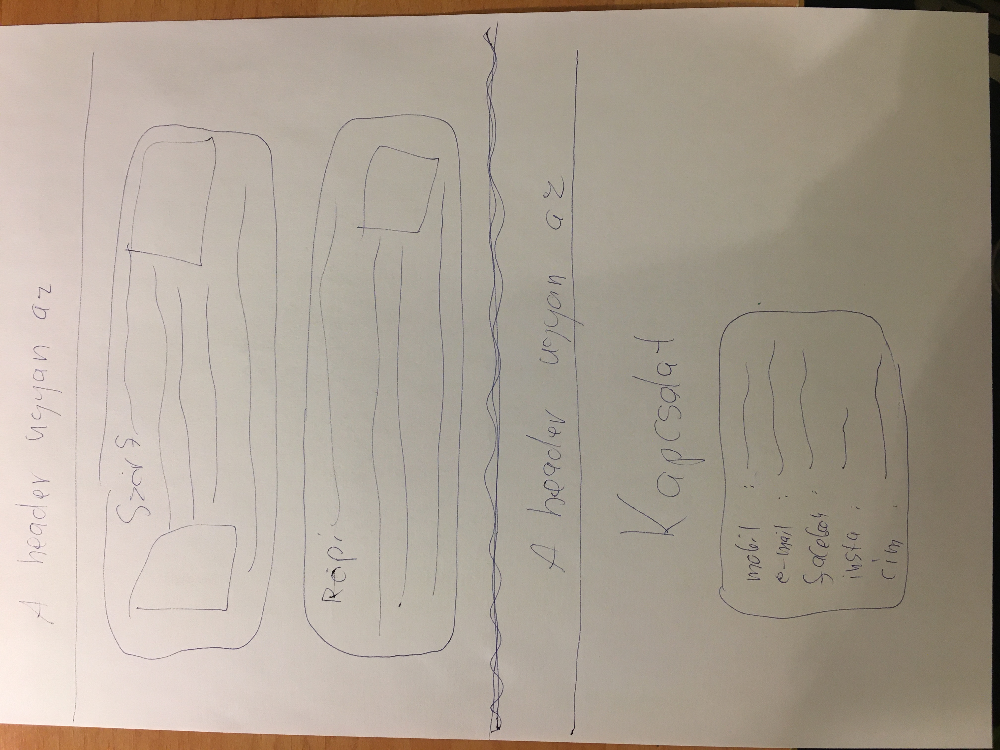

A legnagyobb bajok az elrendezéssel voltak mert az a szájbatekert css nagyon jol tudja kezelni a táblázatokat és a listákat. Azért valószínű, hogy én rontottam el 1000-szer de csakazért is sikerült mindent bal oldalra rendezni benne. A másik királyság a drága css-ben, hogy a háttereket egyszerűen..., és egyértelműen kezeli... jo biztos, hogy ha ezt tanultuk volna szeptember óta, nem ezt mondanám, de így meggyűlt vele a bajom, és nyertem!!!! A hátterek stimmelnek, pont úgy, ahogy akartam:  